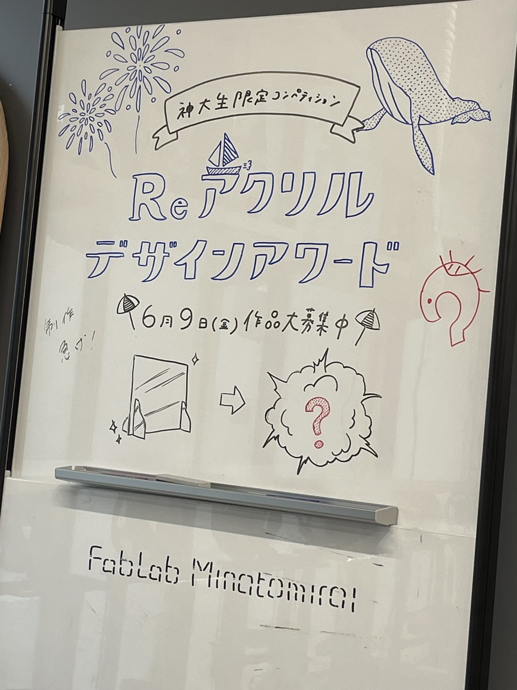
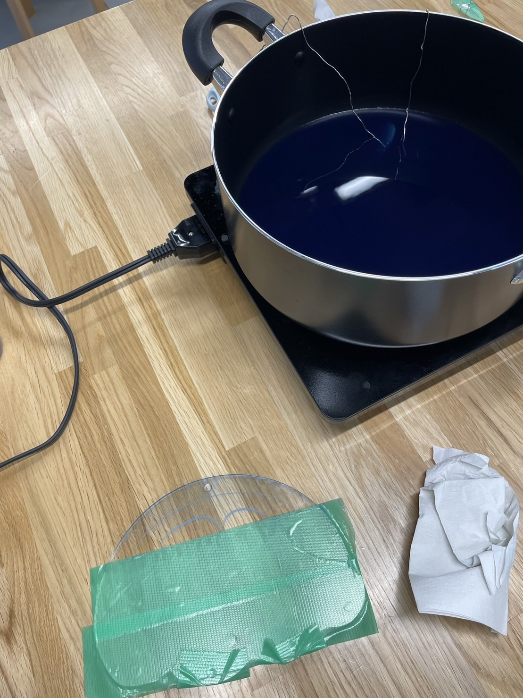
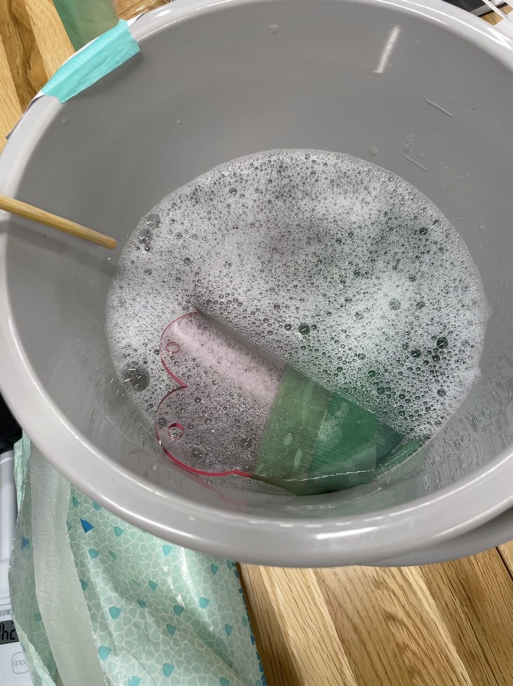
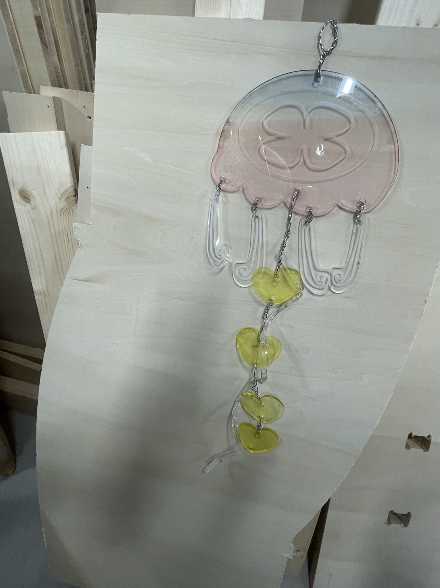
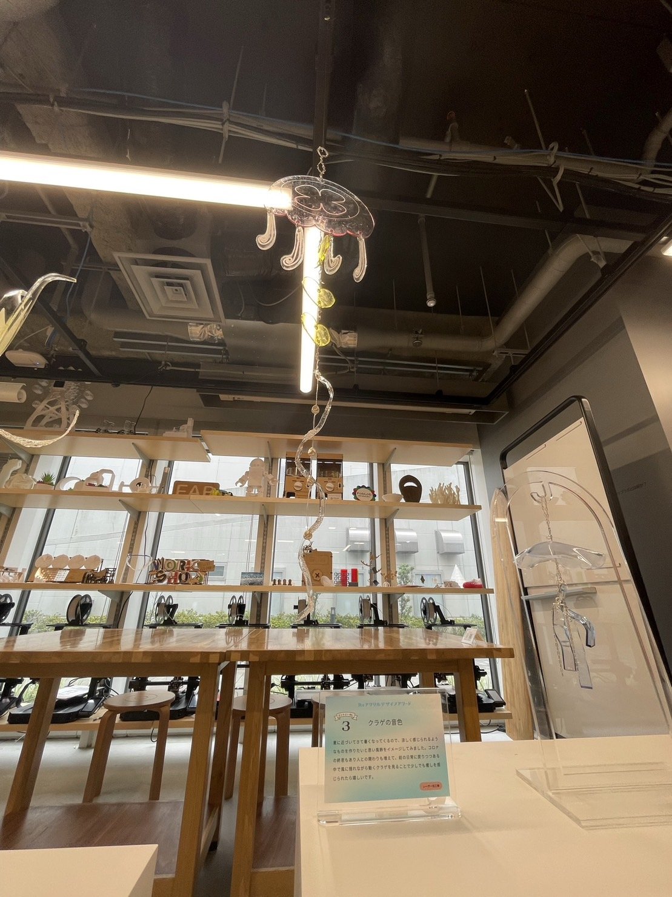

第9回｜鎌倉プロジェクト 活動②
ICカード改良計画
・自分で好きな面を決めて表面、裏面で利用できるケースにする。
・実際にプロトタイプで作製したケースは使えるのか実験（学生証2枚で）→反応した
・デザインを２通りにして、分かりやすくする。
→月🌙と太陽🌞
？？暑さの問題は大丈夫なのか。。。
Reアクリル デザインアワード
廃棄されるアクリル板を利用してものづくりを行いました。
コロナ過でお世話になったアクリル板が何になるのか，他の人のつくるものも楽しみでした。
アクリルと言えば、アクセサリーやストラップに活用されていたりすることはありますが、他にも何か面白いものをイメージしながら製作しました。
透明で涼しいイメージが強いことから、部屋に飾れるようなものをつくり、少しでも暑さを乗り越えられたら良いなと思ってつくりました。
他の皆さんもクォリティーが高いモノばかりで凄かったです。
写真と動画載せておきます＾＾

グランプリ結果
神奈川大学のホームページ「Reアクリルデザインアワード」詳細